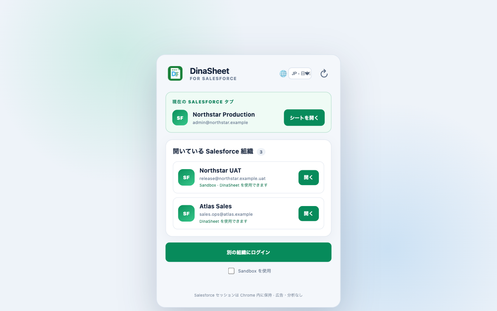

目次
1. はじめに
- 提供された DinaSheet ビルドをインストールします。すぐに起動できるようにする場合は、Chrome の拡張機能メニューから DinaSheet for Salesforce を固定します。
- Chrome で Salesforce を開き、通常どおりログインします。DinaSheet はブラウザーのセッションを再利用するため、Salesforce パスワードを別途入力する必要はありません。
- DinaSheet のツールバーアイコンをクリックします。現在の Salesforce 組織、または検出された別のログイン済み組織を選び、開くを選択します。
- データの読み込みや更新を行う前に、DinaSheet 上部の組織表示を確認します。

組織が表示されない場合：Salesforce を開くかログインし、ツールバーポップアップに戻って検出済みセッションを更新してください。
2. オブジェクトと SOQL クエリ
- インポートパネルを開いてクエリを選ぶか、Salesforce データブラウザーからオブジェクトを開きます。
- オブジェクトと項目を選んでクエリを作成するか、独自の SOQL を入力します。取得したレコードを更新する可能性がある場合は
Idを含めます。 - 現在のシートまたは新しいシートを出力先として選び、実行を選択します。
- セルの書式設定やグリッド操作には、スプレッドシートのツールバーを使用します。読み込んだ値は編集可能な静的セルであり、セルを変更しただけでは Salesforce は更新されません。

更新可能になる条件：シートに Id 列があり、レコードが 1 種類の Salesforce オブジェクトとして判定できる必要があります。読み取り専用の項目や無効な値は Salesforce の項目メタデータに基づいて拒否されます。
3. レコードの確認と更新
- 更新可能な
Id列を持つシートで、対応する項目を 1 つ以上編集します。 - 詳細パネルが閉じている場合は開きます。変更項目カードに、各レコードの変更前・変更後の値が正確に表示されます。
- 確認カードの更新を選択します。
- 確認ダイアログを読みます。さらに編集する場合はキャンセル、表示された値だけを Salesforce に送る場合は更新を選択します。
- 更新に成功すると、変更項目を含む上限付きの監査記録がローカルに保存されます。

DinaSheet にレコード削除機能はありません。対象となる更新を明示的に確定するまで、グリッドでの編集はローカルのままです。
4. 更新監査とロールバック
- レールの LOG アイコンを選択して更新監査ログを開きます。
- 対象のオブジェクトと更新日時を探します。監査ログは新しい順に表示されます。
- 記録された以前の値へ戻したい各行のロールバックセルを選択します。
- 表示された変更項目カードを確認します。ロールバックは通常の Salesforce 更新として準備され、自動では送信されません。
- 監査記録の作成後に別の編集が行われた可能性がある場合は、特に現在の Salesforce 値を確認してから、更新を確定またはキャンセルします。

監査記録は過去時点のスナップショットです。レコードが変更されていないことを保証するものではありません。ロールバックを確定する前に現在の値を確認してください。
5. CSV・Excel ファイル
- インポートパネルを開き、アップロードを選択します。
- ローカルの CSV または Excel ファイルを選び、現在のシートまたは新しいシートを出力先として指定します。
- 実行を選択します。DinaSheet はブラウザー内でファイルをローカル解析し、ファイル名、行数、出力先、判定された Salesforce オブジェクトの詳細を表示します。
- 読み込んだ表に 1 種類のオブジェクトの有効なレコード ID が含まれる場合は、確認付き更新が利用可能になります。更新前に判定されたオブジェクトを確認してください。

ファイルを開いても、DinaLab や開発者運営のサーバーへアップロードされることはありません。ワークブックファイルとシートスナップショットは DinaSheet に永続保存されません。
6. Salesforce レポート
- レポートインポートモードを開くか、Salesforce データブラウザーからレポートを選びます。
- レポート名で検索するかレポート ID を入力し、出力先シートを選んで実行を選択します。
- グリッドの横で、レポート名、API 参照名、フォルダー、形式、説明、検索条件、取得元の詳細を確認します。
- Salesforce の JSON レポート API が 2,000 行の上限に達した場合、DinaSheet は Salesforce から同じレポートの全件ワークブックエクスポート取得を試みます。

グリッドの編集で Salesforce レポート定義が変更されることはありません。レポート行に 1 種類のオブジェクトの有効なレコード ID がある場合、利用可能な確認付き更新はレポートではなく Salesforce レコードを更新します。
7. ダウンロードと言語
シートデータをダウンロードする
- エクスポートするシートを選択します。
- ツールバーのダウンロード操作を選び、利用可能な形式を指定します。
- 別のシステムで使用する前に、ダウンロードしたファイルを確認します。
画面表示の言語を変更する
DinaSheet は、取得できる場合は最初に Salesforce ユーザーの言語に従います。ポップアップまたは DinaSheet ヘッダーの言語セレクターで EN — English と JP — 日本語を切り替えられます。言語を変更すると DinaSheet が再読み込みされます。
8. 保存、プライバシー、安全性
- クエリや更新を実行する前に、接続中の Salesforce 組織を必ず確認してください。
- レコード更新には、行の選択、項目単位の確認、最終確定が必要です。
- 監査記録は変更項目だけを保存し、Salesforce 組織ごとに成功した最新 50 件の更新イベント、最大 2 MB に制限されます。
- 設定と監査記録は端末上の Chrome 拡張機能ストレージに保存されます。削除するには拡張機能ストレージを消去するか、DinaSheet をアンインストールします。
- Salesforce セッション Cookie と認証ヘッダーは拡張機能内に保持されます。
- DinaSheet には分析、テレメトリー、広告、外部メッセージング、開発者運営のデータバックエンドはありません。